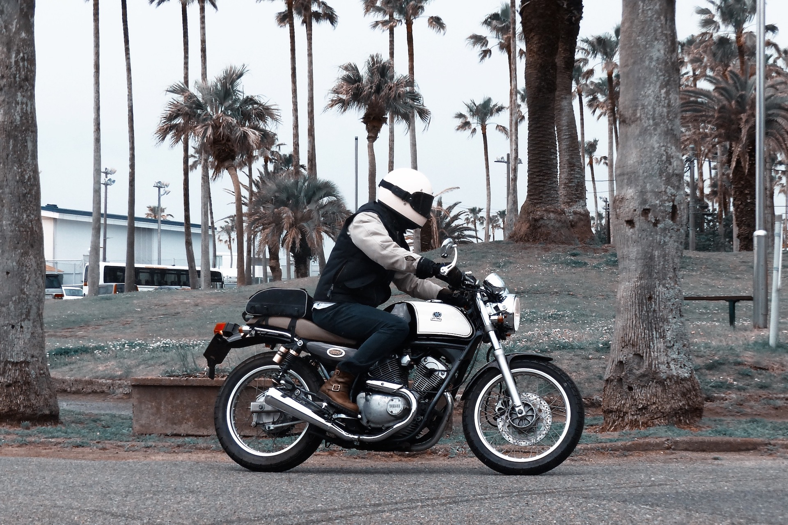
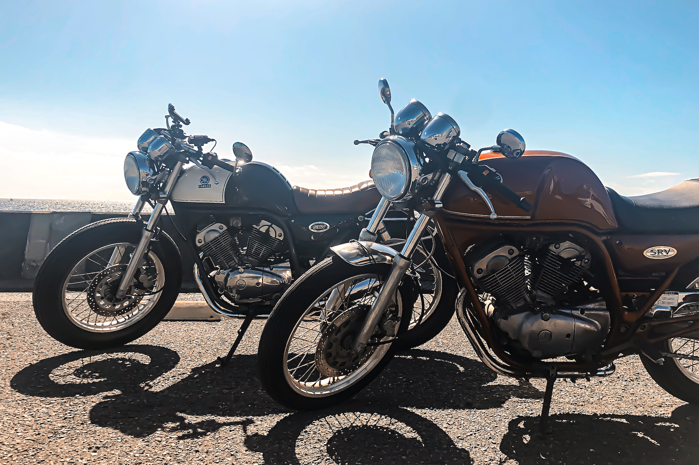
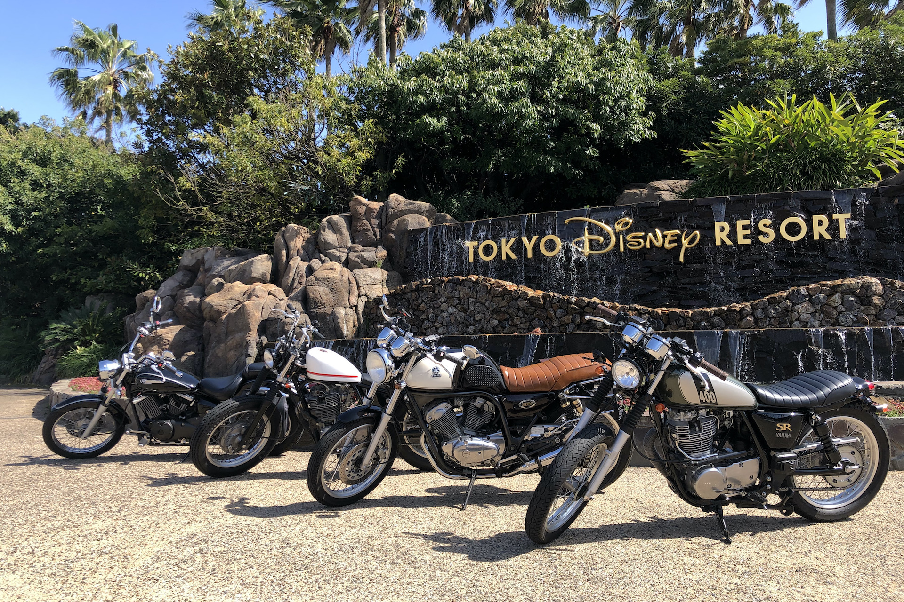
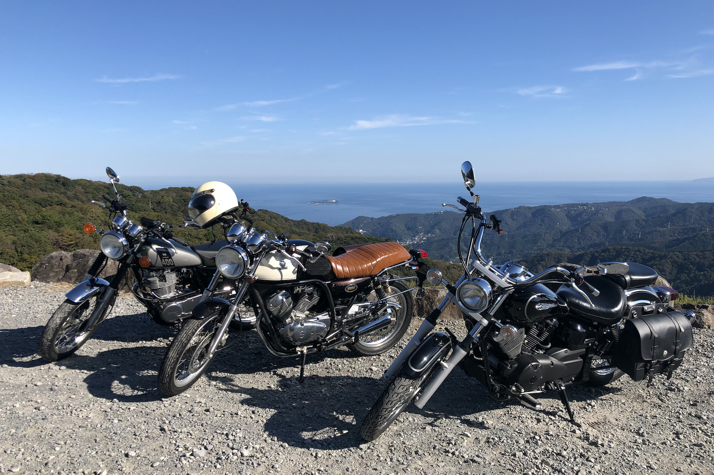
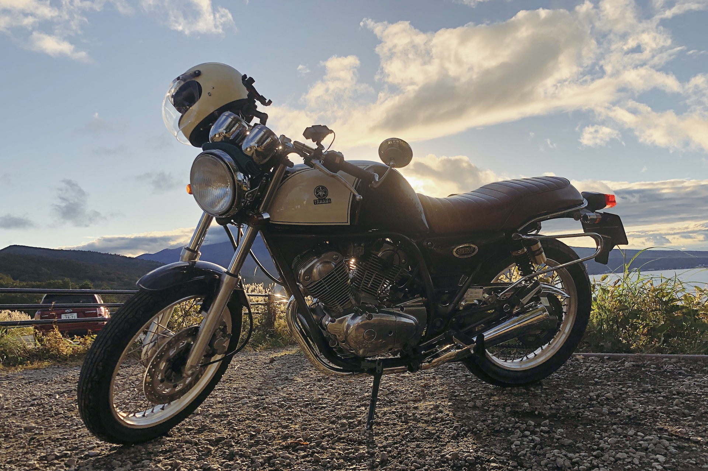
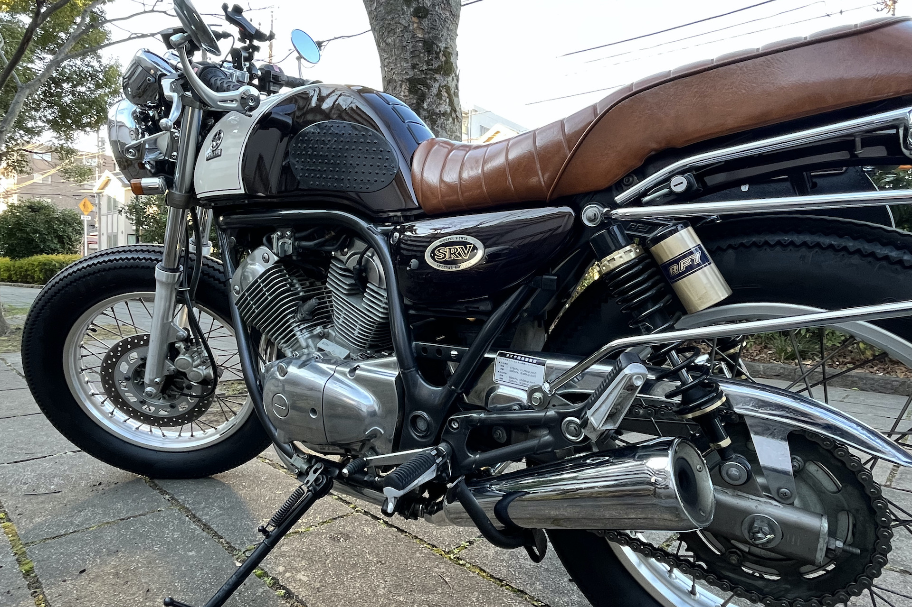

バイク YAMAHA : SRV250S / 1993年モデル
自分で言うのもなんですが、最高にセンスのいいバイクに乗っています。タイヤ、ハンドル周り、シートなどコツコツカスタムして理想的なフォルムに近づけました。休日は、バイク仲間と一緒に江ノ島近辺をダラダラ走ってリフレッシュしています。






自分で言うのもなんですが、最高にセンスのいいバイクに乗っています。タイヤ、ハンドル周り、シートなどコツコツカスタムして理想的なフォルムに近づけました。休日は、バイク仲間と一緒に江ノ島近辺をダラダラ走ってリフレッシュしています。